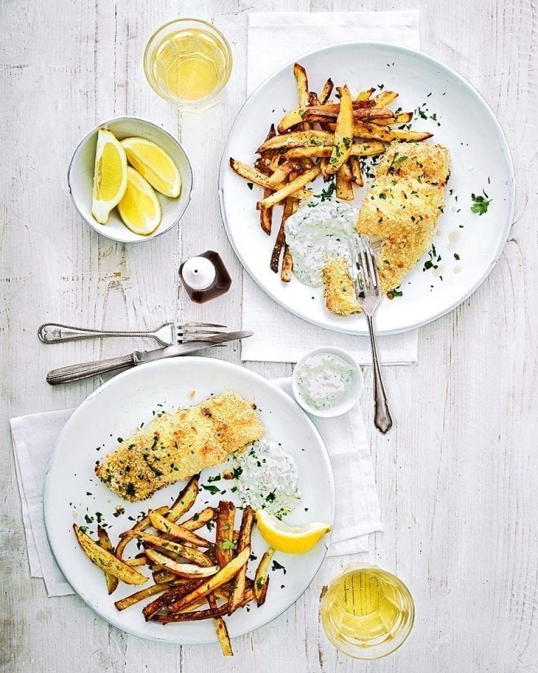

Ultimate Fish & Chips Recipe

Description
We have made this Friday night favourite healthier by coating the fish in breadcrumbs and oven-baking everything instead of deep-frying. This easy version of the British classic is a great hassle-free way to feed the whole family.
Ingredients
- 1.2kg maris piper potatoes, cut into 1cm wide chips
- 2 tbsp olive oil, plus extra for greasing
- 2 medium free-range eggs, lightly beaten
- 100g dried breadcrumbs, lightly toasted in a dry pan
- Finely grated zest 1 lemon, plus juice ½ and wedges to serve
- 4 sustainable white fish fillets such as cod/pollock/haddock
- 100g greek yogurt
- 1½ tbsp capers, chopped
- 1 small shallot, very finely chopped
- 2 tbsp fresh flat leaf parsley, chopped, plus extra to serve
- Heat the oven to 220°C/200°C fan/gas 7. Put the chips in a large roasting tin in a single layer. Drizzle with olive oil, season with salt and pepper, then toss to coat. Roast for 40 minutes, turning halfway.
- Put the beaten eggs on a small, lipped plate and the breadcrumbs, mixed with the lemon zest, on another. Lightly oil a shallow baking tray. Dip each fish fillet into the egg to coat, then dip in the crumbs and put into the baking tray. When the chips have been cooking for 22 minutes, put the fish into the oven for the last 18 minutes.
- Meanwhile, make the tartare sauce. In a small bowl, mix the yogurt, capers, shallot and parsley with the lemon juice until well combined. Serve the fish and chips with a dollop of tartare sauce scattered with extra parsley, with lemon wedges to squeeze over.